Discover Ronda
☰
Discover Ronda
About Ronda
▾
▾
History
Ronda Today
Famous Visitors
See & Do
▾
▾
Attractions
Sightseeing
Festivals & Celebrations
Hiking & Nature
Around Ronda
Image Gallery
▾
▾
Ronda
Serranía de Ronda
Andalucía
Plan Your Trip
▾
▾
Getting to Ronda
Getting Around
Practical Information
Travel Sustainably
▾
▾
Sustainability
Hotels & Accommodation
About Us
▾
▾
Who We Are
Support Us
Cambiar Idioma:
Attractions
Arab Baths
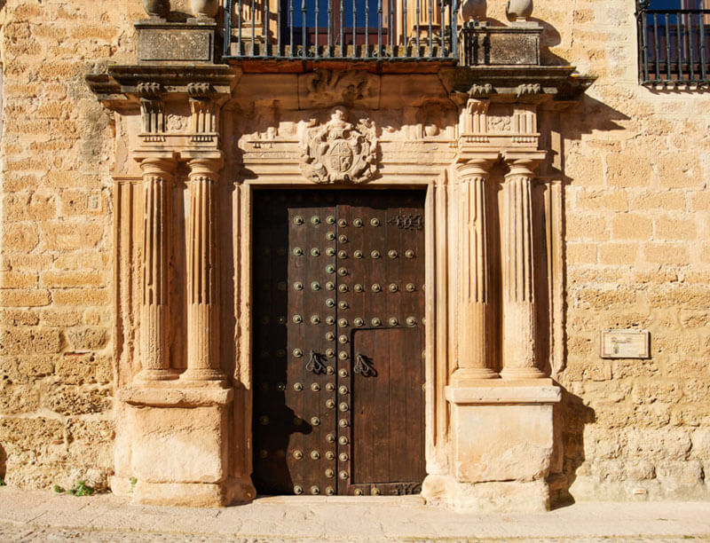
Mondragon Palace
Casa del Rey Moro
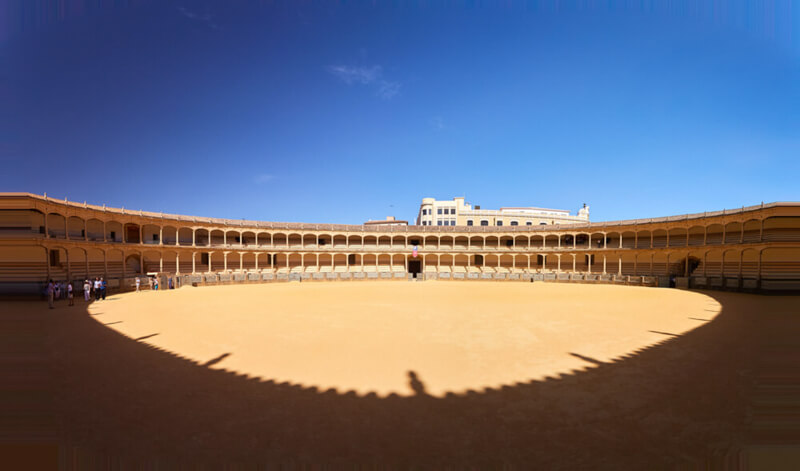
Bullring of the Royal Cavalry of Ronda
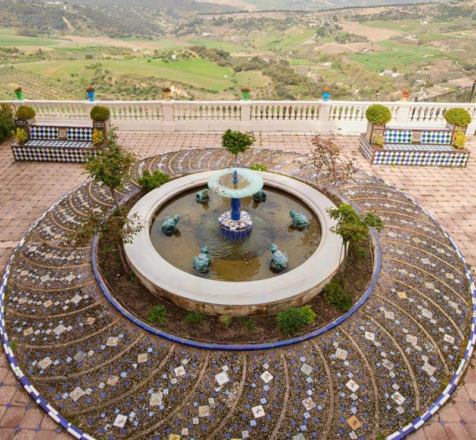
Casa don Bosco
Iglesia de Santa María la Mayor
Paseo de Blas Infante
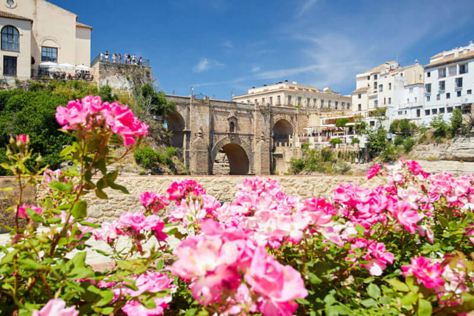
Jardines de Cuenca
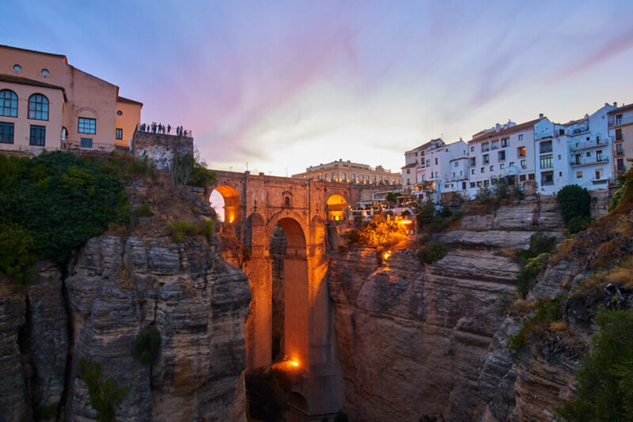
Puente Nuevo
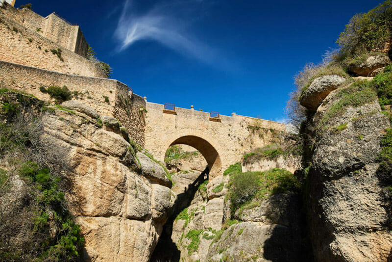
Puente Viejo
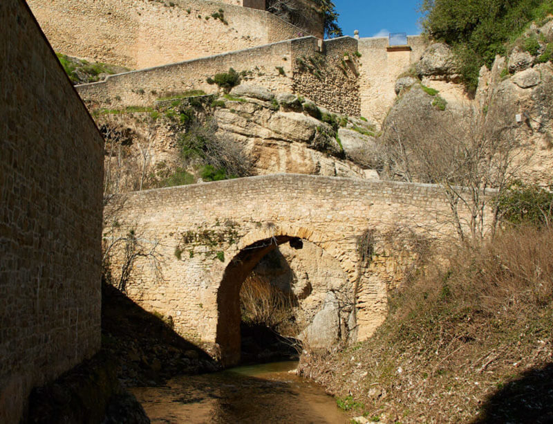
Puente Romano
Mirador de Aldehuela
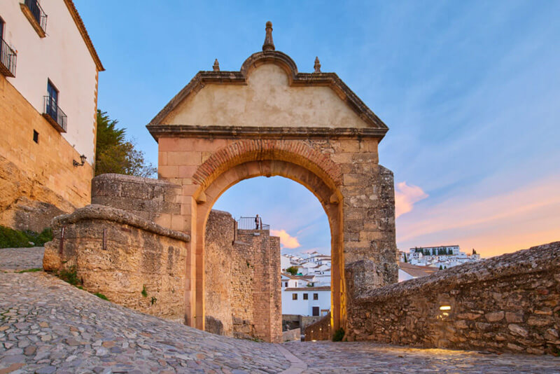
Felipe V Arch
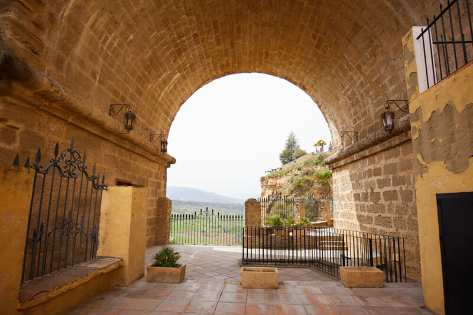
Bridge Museum
Xijara Gate
Walls of Ronda
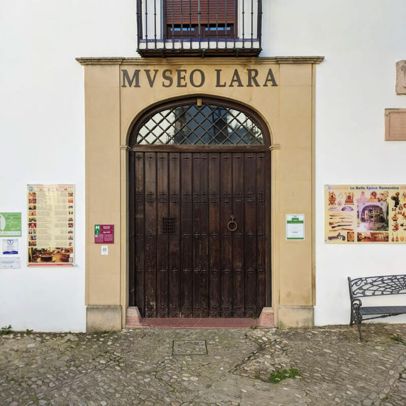
Museo Lara
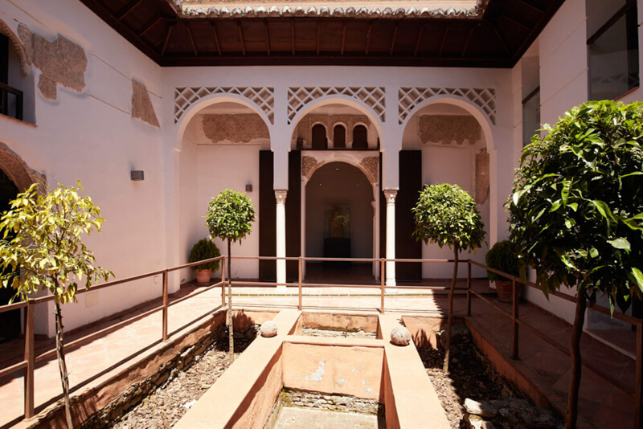
Casa del Gigante
Palacio del Marqués de Salvatierra
Minaret of San Sebastian
Plaza Duquesa de Parcent
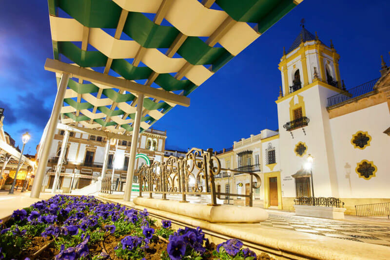
Plaza del Socorro
Puerta de Almocábar
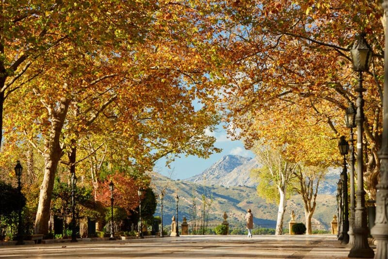
Alameda del Tajo